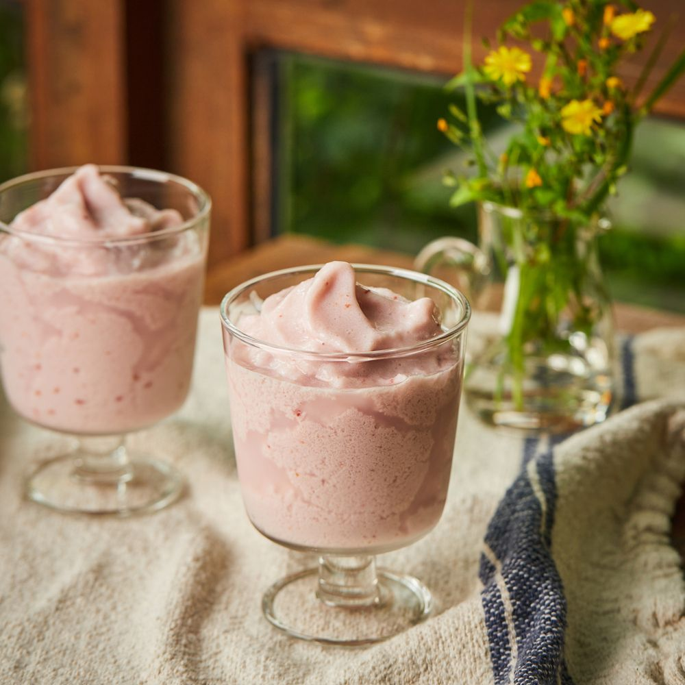

딸기잼스무디
달콤한 딸기잼을 우유, 얼음과 함께 갈아낸 딸기잼 스무디로, 보관이 용이한 딸기잼으로 사계절 내내 손쉽게 만들 수 있는 레시피입니다.

기본 재료 : 2인분 기준
- 딸기 800g
- 설탕 400g
- 레몬즙 30ml
- 딸기잼 4큰술
- 우유 1컵
- 얼음 2컵
조리 과정
- 1. 딸기는 깨끗이 씻어 물기를 없앤 후 꼭지를 따고 으깨주세요.
- 2. 으깬 딸기에 설탕과 레몬즙을 넣어 섞은 후 내열 용기에 담고 내열 뚜껑이나 포일을 씌워주세요.(tip. 얕은 내열 용기는 딸기잼이 탈 수 있어요. 두께가 두껍고, 깊이가 있고 좁은 용기를 사용해 주세요.)
- 3. 법랑 접시에 내열 용기를 올린 후 1단에 넣고 오븐에 가열해 주세요.(tip. 딸기잼 색을 밝게 하고싶다면 조절 기능으로 1시간~1시간 30분 정도 줄여도 좋아요)
- 4. 블렌더에 딸기잼과 우유, 얼음을 넣고 곱게 갈아주세요.
- 5. 완성된 스무디를 컵에 담아 맛있게 즐겨주세요.